0x01 反射概念
反射是Java的特征之一，是一种间接操作目标对象的机制，核心是JVM在运行状态的时候才动态加载类，对于任意一个类都能够知道这个类所有的属性和方法，并且对于任意一个对象，都能够调用它的方法/访问属性。这种动态获取信息以及动态调用对象方法的功能成为Java语言的反射机制。通过使用反射我们不仅可以获取到任何类的成员方法(Methods)、成员变量(Fields)、构造方法(Constructors)等信息，还可以动态创建Java类实例、调用任意的类方法、修改任意的类成员变量值等。
0x02 编译机制
静态编译：在编译时确定好类型，绑定对象。
动态编译：在运行时确定类型，绑定对象。
0x03 优点
反射：将类的各个组成部分封装为其他对象，这就是反射机制。
1、可以在程序运行过程中，操作这些对象。
2、可以解耦，提高程序的可扩展性。
0x04 示例讲解
反射机制可以动态创建对象和编译，体现很大的灵活性。在一个大型系统发布时，如果以后需要更新某些功能的时候，不可能让用户将之前的游戏卸载掉，重新安装新的版本。采取静态编译的话，需要把整个游戏重新编译一次才能实现功能的更新，而使用反射机制的话，不需要卸载，只需要在运行的时候动态创建和编译即可。
0x05 java反射机制流程图
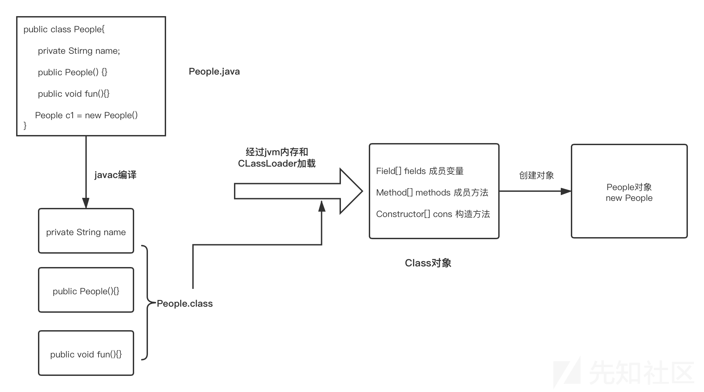
这里我们使用一个简陋的流程图配合讲述下反射机制基本流程。比如我们创建了一个类文件，经过javac编译之后，就会形成class文件，同时jvm内存会查找生成的class文件读入内存和经过ClassLoader加载，同时会自动创建生成一个Class对象，里面拥有其获取成员变量Field，成员方法Method和构造方法Constructor等方法。最后就是我们平时new创建对象。
这里其实跟我们了解到java运行体系没有很大区别，只是我们生成class文件的时候，也创建了Class对象。而Class是java.lang.Class类中，是所有类的的类。而类是java.lang.Class类的实例对象，所以我们的反射机制本身不复杂，就是获取一个类的Class对象，然后在用Class对象中的获取成员变量Field，成员方法Method和构造方法Constructor等方法，再去动态获取一个类或者调用一个类的属性，变量，构造方法等方式。
0x06 反射组成相关的类
反射机制相关操作一般位于java.lang.reflect包中。
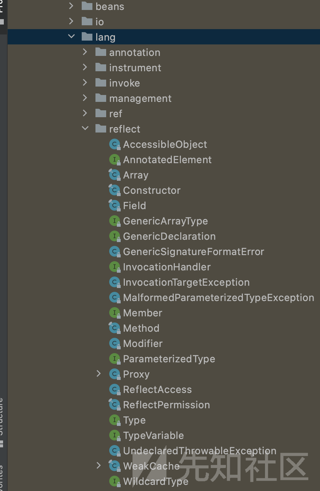
而java反射机制组成需要重点注意以下的类：
java.lang.Class：类对象;
java.lang.reflect.Constructor：类的构造器对象;
java.lang.reflect.Field：类的属性对象;
java.lang.reflect.Method：类的方法对象;
0x07 反射常见使用的方法
获取类的方法：forname
实例化类对象的方法：newInstance
获取函数的方法：getMethod
执行函数的方法：invoke
class对象的获取方法
从上述流程图分析中可以得知，java反射机制的原理基础是理解Class类，在反射中，我们想获取一个类或调用一个类的方法，需要先获取到该类的Class对象。
对于普通用户我们可以采用以下方法创建实例：
Person test = new Person();而我们在创建class类的实例对象却不能使用上述方法，运行会抛出错误
Class test = new Class();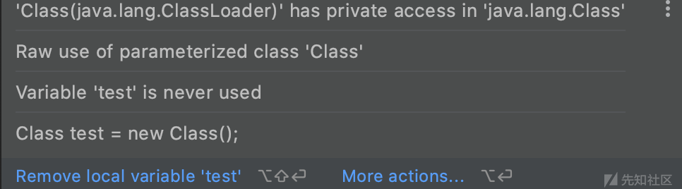
同时我们可以跟进Class类的源码进行查看，发现其构造器是私有的，所以只有JVM能够创建Class对象。
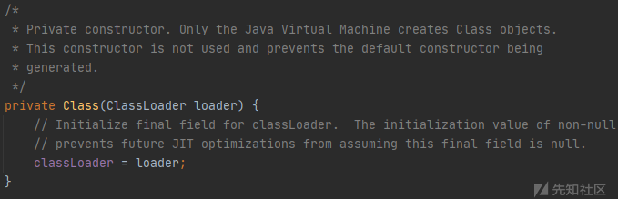
因为Class类是private私有属性，我们也无法通过创建对象的方式来获取class对象，那么我们怎样才能够获取到class对象呢？一般我们获取class对象就有以下三种方法，我们来逐一看看。
1、类的.class属性
第一种就是最简单明了的方式，我们可以通过类名的属性class获取。
Class c1=ReflectDemo.class;2、实例化对象的getClass()方法
第二种我们可以先实例化一个对象，之后在调用getClass()方法。
ReflectDemo demo2= new ReflectDemo();
Class c2 = demo2.getClass();3、Class.forName(String className)：动态加载类
第三种则是调用Class类中的forName方法，将字节码文件加载进内存，返回Class对象。
Class c3 = Class.forName("reflectdemo.ReflectDemo");我们可以写个简单的示例代码，分别利用这三种方法获取当前类Class对象的当前类名。
public class ReflectTemo {
public static void main(String[] args) throws ClassNotFoundException {
// 类的.class属性
Class c1 = ReflectTemo.class;
System.out.println(c1.getName());
// 实例化对象的getClass()方法
ReflectTemo demo = new ReflectTemo();
Class c2 = demo.getClass();
System.out.println(c2.getName());
// Class.forName(String className): 动态加载类
Class c3 = Class.forName("com.reflect.ReflectTemo");
System.out.println(c3.getName());
}
}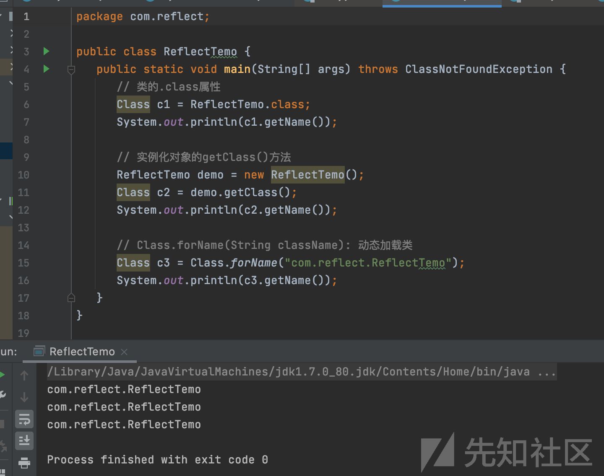
但在这三种获取CLass类方式中，我们一般使用第三种通过Class.forName方法去动态加载类。且使用forName就不需要import导入其他类，可以加载我们任意的类。
而使用类.class属性，需要导入类的包，依赖性太强，在大型项目中容易抛出编译错误；
而使用实例化对象的getClass()方法，需要本身创建一个对象，本身就没有了使用反射机制意义。
所以我们在获取class对象中，一般使用Class.forName方法去获取。
获取成员变量Field
获取成员变量Field位于java.lang.reflect.Field包中
Field[] getFields() ：获取所有public修饰的成员变量
Field[] getDeclaredFields() 获取所有的成员变量，不考虑修饰符
Field getField(String name) 获取指定名称的 public修饰的成员变量
Field getDeclaredField(String name) 获取指定的成员变量
import java.lang.reflect.Field;
public class FieldTest {
public String name;
public String profession;
protected int age;
private String number;
char sex;
public static void main(String[] args){
try{
Class c1 = Class.forName("com.reflect.FieldTest"); // 创建Class对象
Field[] fieldArray1 = c1.getDeclaredFields(); //获取全部成员变量
Field[] fieldArray2 = c1.getFields();// 获取全部public成员变量
for (Field field : fieldArray1){
System.out.println(field.getName());
}
System.out.println("-------分割线---------");
for (Field field : fieldArray2){
System.out.println(field.getName());
}
System.out.println("-------分割线---------");
Field fieldArray3 = c1.getField("name"); // 获取指定名称的public修饰的成员变量
System.out.println(fieldArray3.getName());
System.out.println("-------分割线---------");
Field fieldArray4 = c1.getDeclaredField("number"); // 获取指定的成员变量
System.out.println(fieldArray4.getName());
} catch (Exception e) {
e.printStackTrace();
}
}
}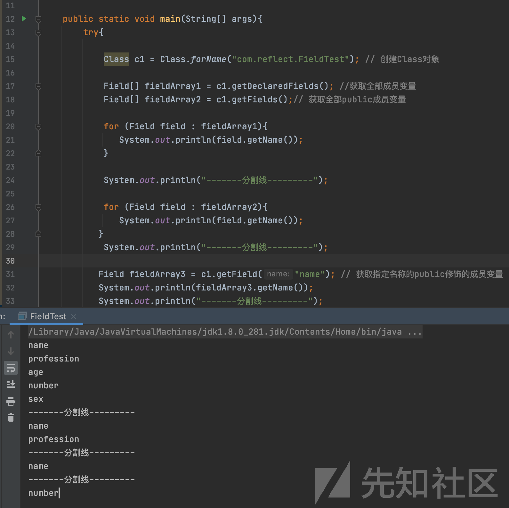
获取成员方法Method
Method getMethod(String name, 类<?>… parameterTypes) //返回该类所声明的public方法
Method getDeclaredMethod(String name, 类<?>… parameterTypes) //返回该类所声明的所有方法
//第一个参数获取该方法的名字，第二个参数获取标识该方法的参数类型
Method[] getMethods() //获取所有的public方法，包括类自身声明的public方法，父类中的public方法、实现的接口方法
Method[] getDeclaredMethods() // 获取该类中的所有方法
import java.lang.reflect.Method;
public class MethodTest {
public void study(String s) {
System.out.println("学习中..." + s);
}
protected void run() {
System.out.println("跑步中...");
}
void eat() {
System.out.println("吃饭中...");
}
private String sleep(int age) {
System.out.println("睡眠中..." + age);
return "sleep";
}
public static void main(String[] args) {
try {
Class c = Class.forName("com.reflect.MethodTest"); // 创建Class对象
Method[] methods1 = c.getDeclaredMethods(); // 获取所有该类中的所有方法
Method[] methods2 = c.getMethods(); // 获取所有的public方法，包括类自身声明的public方法，父类中的public方法、实现的接口方法
for (Method m:methods1) {
System.out.println(m.);
}
System.out.println("-------分割线---------");
for (Method m:methods2) {
System.out.println(m);
}
System.out.println("-------分割线---------");
Method methods3 = c.getMethod("study", String.class); // 获取study方法
System.out.println(methods3);
System.out.println("-------分割线---------");
Method method4 = c.getDeclaredMethod("sleep", int.class); // 获取sleep方法
System.out.println(method4);
} catch (Exception e) {
e.printStackTrace();
}
}
}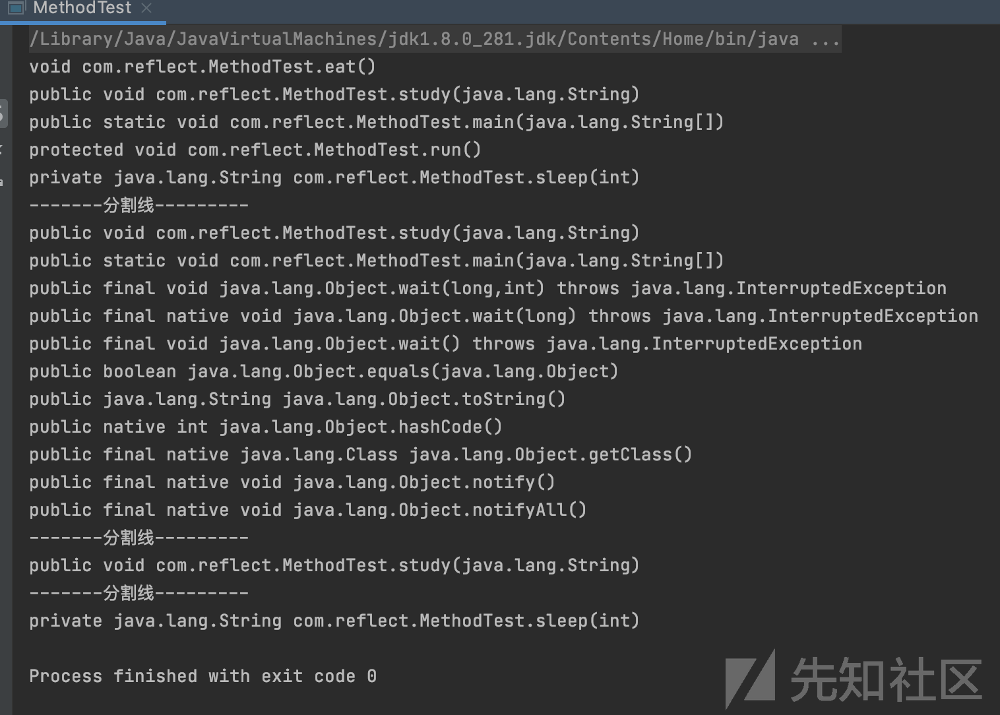
获取构造函数Constructor
Constructor<?>[] getConstructors() ：只返回public构造函数
Constructor<?>[] getDeclaredConstructors() ：返回所有构造函数
Constructor<> getConstructor(类<?>… parameterTypes) : 匹配和参数配型相符的public构造函数
Constructor<> getDeclaredConstructor(类<?>… parameterTypes) ： 匹配和参数配型相符的构造函数
import java.lang.reflect.Constructor;
public class ConstructorTest {
public ConstructorTest() {
System.out.println("无参构造函数");
}
public ConstructorTest(String name) {
System.out.println("有参构造函数" + name);
}
private ConstructorTest(boolean n) {
System.out.println("私有构造函数");
}
public static void main(String[] args) {
try {
Class c1 = Class.forName("com.reflect.ConstructorTest");
Constructor[] constructors1 = c1.getDeclaredConstructors();
Constructor[] constructors2 = c1.getConstructors();
for (Constructor c : constructors1) {
System.out.println(c);
}
System.out.println("-------分割线---------");
for (Constructor c : constructors2) {
System.out.println(c);
}
System.out.println("-------分割线---------");
Constructor constructors3 = c1.getConstructor(String.class);
System.out.println(constructors3);
System.out.println("-------分割线---------");
Constructor constructors4 = c1.getDeclaredConstructor(boolean.class);
System.out.println(constructors4);
} catch (Exception e) {
e.printStackTrace();
}
}
}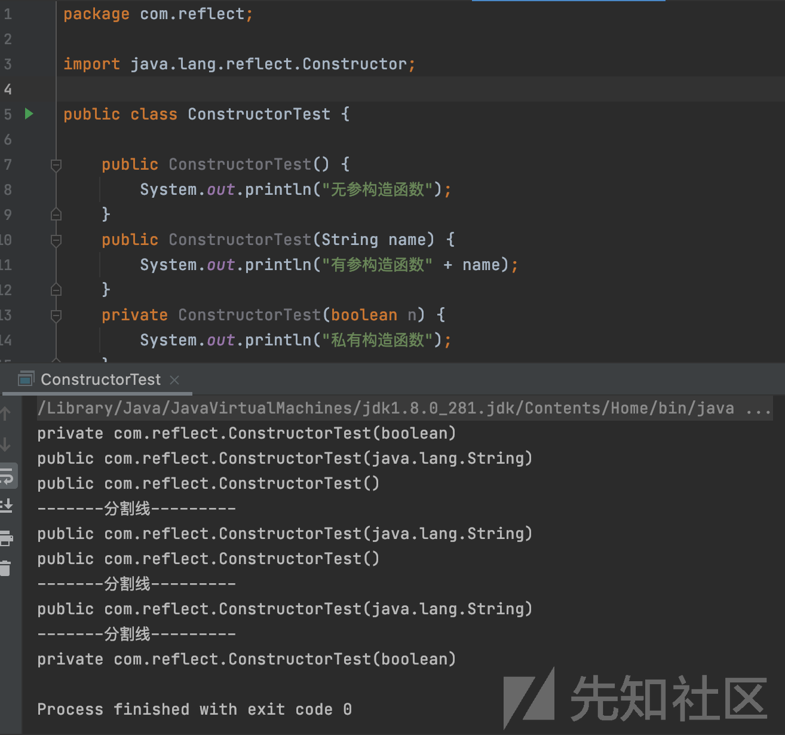
反射创建类对象
在前面我们获取了Class对象，之后展示了一系列获取成员变量、成员方法和成员函数的方式后，我们现在可以通过反射来生成实例化对象，一般我们使用Class对象的newInstance()方法来进行创建类对象。
使用的方式也特别简单，只需要通过forname方法获取到的class对象中进行newInstance方法创建即可。
Class c = Class.forName("com.reflect.MethodTest"); // 创建Class对象
Object m1 = c.newInstance(); // 创建类对象这里也顺便说下invoke方法，invoke方法位于java.lang.reflect.Method类中，用于执行某个的对象的目标方法。
一般会和getMethod方法配合进行调用。
使用用法
public Object invoke(Object obj, Object... args)第一个参数为类的实例，第二个参数为相应函数中的参数
obj：从中调用底层方法的对象，必须是实例化对象
args： 用于方法的调用，是一个object的数组，参数有可能是多个
但需要注意的是，invoke方法第一个参数并不是固定的：
如果调用这个方法是普通方法，第一个参数就是类对象；
如果调用这个方法是静态方法，第一个参数就是类；
将我们的知识进行整合归纳下，我们可以写个完整的小例子。
import java.lang.reflect.Method;
public class ReflectTest {
public void reflectMethod() {
System.out.println("反射测试成功!!!");
}
public static void main(String[] args) {
try {
Class c = Class.forName("com.reflect.ReflectTest"); // 创建Class对象
Object m = c.newInstance(); // 创建类实例对象
Method method = c.getMethod("reflectMethod"); // 获取reflectMethod方法
method.invoke(m); // 调用类实例对象方法
} catch (Exception e) {
e.printStackTrace();
}
}
}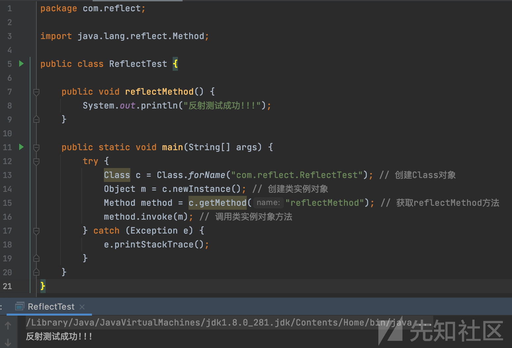
小结
上面我们讲述了反射机制流程概念和基本使用方法，从Class对象获取，到获取成员变量、成员方法和构造函数，接着是newInstance创建类对象和invoke方法，最后是一个简单反射例子的组成。相信大家都对反射有个很清晰的了解和认识，现在我们来看看我们平时漏洞测试中，如何使用java反射中如何获取Runtime类来命令执行测试弹出计算器。
利用反射构造Runtime类执行
这里我们可以先模仿前面的反射例子，尝试去反射执行Runtime类去命令执行。
import java.lang.reflect.Method;
public class RuntimeTest {
public static void main(String[] args) throws Exception {
Class c1 = Class.forName("java.lang.Runtime");
Object m = c1.newInstance();
Method method = c1.getMethod("exec", String.class);
method.invoke(m,"/System/Applications/Calculator.app/Contents/MacOS/Calculator");
}
}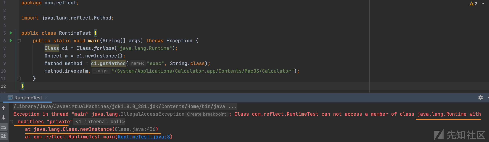
但我们发现了使用newInstance产生了报错的话，而往往其可能是以下原因未能实现。
1、使用的类没有无参构造函数
2、使用的类构造函数是私有的
之后我们查看其出错原因，java.lang.Runtime with modifiers “private”。Runtime类的构造方法是private权限私有的，是根据“单例模式”进行设计的，我们无法进行直接调用。看来我们上述的反射机制也是有限制的，并不能饶过private权限的检查。
既然我现在不能绕过private权限的检测，那我先不管newIntance创建类对象，先获取Rumtime类的方法先谈个计算器再看看。所以我们需要对代码进行简单修改下。
我们使用getMethod作用通过反射获取一个类的某个特定的公有方法。且java中支持类的重载，我们不能仅通过函数名确定一个函数。在调用getMethod时候，需要传给他你需要获取的函数的参数类型列表。
如Runtime.exec方法有6个重载：
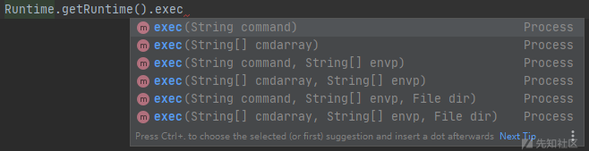
exec(String commmand)
我们可以实用最简单这种只有一个参数且类型是String。实用getMethod(“exec”,String.class)获取Runtime.exec方法，并且获取getRuntime方法来执行。
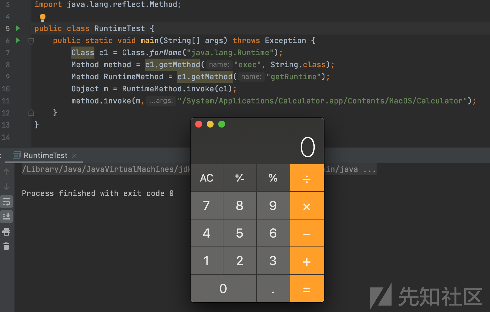
然后我们将这段代码进行简略下，就生成以下我们常见的反射payload测试：
Class c1 = Class.forName("java.lang.Runtime");
c1.getMethod("exec", String.class).invoke(c1.getMethod("getRuntime").invoke(c1),"/System/Applications/Calculator.app/Contents/MacOS/Calculator");这里我们虽然成功执行方法弹出计算器，但仅仅只是调用其方法去实现。而我们还是想执行其私有方法，通过newInstance来构造使用。这样就需要我们通过setAccessible(true)来突破访问权限的检查。
设置setAccessible(true)暴力访问权限
在一般情况下，我们使用反射机制不能对类的私有private字段进行操作，绕过私有权限的访问。但一些特殊场景存在例外的时候，比如我们进行序列化操作的时候，需要去访问这些受限的私有字段，这时我们可以通过调用AccessibleObject上的setAccessible()方法来允许访问。
Java.lang.reflect.AccessibleObject类是Field，Method和Constructor类对象的基类，可以提供将反射对象标记为使用它抑制摸人Java访问控制检查的功能，同时上述的反射类中的Field，Method和Constructor继承自AccessibleObject。所以我们在这些类方法基础上调用setAccessible()方法，既可对这些私有字段进行操作。
所有我们最开始的代码再修改简略下，就能成功命令执行了。
import java.lang.reflect.Constructor;
public class RuntimeTest {
public static void main(String[] args) throws Exception {
Class c1= Class.forName("java.lang.Runtime");
Constructor m = c1.getDeclaredConstructor();
m.setAccessible(true);
c1.getMethod("exec", String.class).invoke(m.newInstance(), "/System/Applications/Calculator.app/Contents/MacOS/Calculator");
}
}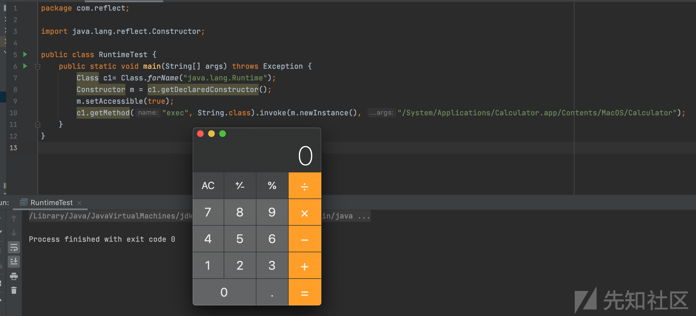
Java反序列化漏洞demo
最后结束就用一个之前学习java反射的时候学习的demo，如果我们在进行反序列化过程中可控的话，能够加载我们使用反射调用的恶意命令语句的话，则能够成功进行命令执行。
import java.io.*;
import java.lang.reflect.Method;
public class demo implements Serializable {
private Integer age;
private String name;
public demo() {}
public demo(String name,Integer age) {// 构造函数，初始化时执行
this.age = age;
this.name = name;
}
private void readObject(java.io.ObjectInputStream in) throws IOException,ClassNotFoundException{
in.defaultReadObject(); // 调用原始的readObject方法
try{ // 通过反射方法执行命令;
Method method = java.lang.Runtime.class.getMethod("exec", String.class);
Object result = method.invoke(Runtime.getRuntime(),"calc.exe");
} catch (Exception e) {
e.printStackTrace();
}
}
public static void main(String[] args) {
demo x = new demo();
operation.ser(x);
operation.deser();
}
}
class operation{
public static void ser(Object obj) {
try {// 序列化操作，写数据
ObjectOutputStream oos = new ObjectOutputStream(new FileOutputStream("object.obj"));
// ObjectOutStream能把Object输出成Byte流
oos.writeObject(obj); // 序列化关键函数
oos.flush(); //缓冲流
oos.close(); //关闭流
} catch (IOException e) {
e.printStackTrace();
}
}
public static void deser() {
try {// 反序列化操作，读取数据
File file = new File("object.obj");
ObjectInputStream ois = new ObjectInputStream(new FileInputStream(file));
Object x = ois.readObject(); //反序列化的关键函数
System.out.println(x);
ois.close();
} catch (FileNotFoundException e) {
e.printStackTrace();
} catch (Exception e) {
e.printStackTrace();
}
}
}在这个实验当中，我们使用的Java反射却是可以访问private的方法和属性，绕过第二级安全机制的方法，原理本质是官兵访问安全检查。
小结
在实际利用场景当中，我们利用利用Java反射机制来绕过一些安全权限机制检查，如获取private权限的方法和属性。本质就是我们绕过访问安全检查。所以通过java反射机制的学习，能够为我们为我们后面的java漏洞分析调试，java漏洞poc测试和服务端模板引擎注入等有着十分重要的意义。因为文章讲的比较通俗简单，主要是面向开始没有涉及一些漏洞分析与源码分析，后面java安全基础系列会慢慢加入这些并详细讲解。其次如果大家对文章有什么问题和觉得需要改进的地方，可以在评论下方留言，大家一起探讨交流下。